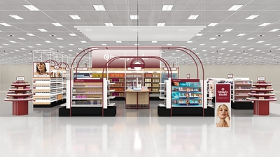

S秋季渠道将榜单、首发、体验与会员权益连成同一条美妆经营链
9 月 7 日，京东美妆发布年度至美榜单，并安排“年度至美星品”与城市地标曝光联动；同日，丝芙兰宣布 2026 SEPHORiA 将于 10 月在上海张园举行，计划集合 60 余个品牌及 20 余个中国本土美妆先锋品牌。两项动作分别落在平台购买入口和线下体验场景，但都以品牌发现、内容传播和后续转化为目标。京东至美榜单报道｜SEPHORiA 公告
银泰百货秋季美妆节的第二档于 9 月 11—13 日运行，以美妆券、新品亮相和多城新店/新柜进入组织秋季客流；美国 Target 则于 9 月 10 日在 600 多家门店及 Target.com 启动 Beauty Studio，配置超过 90 个品牌、逾 1,600 个商品、Beauty Advisors 与会员权益。不同渠道形态都在把陈列、导购、试用与会员机制置于同一经营框架。银泰百货秋季美妆节｜Target Beauty Studio 官方公告
信号判断：渠道合作的交付物已不止上架和短期曝光。品牌进入秋季活动、榜单会场或新专区前，需要同步准备色号/SKU 资料、试用机制、导购培训、内容素材、会员权益和补货节奏；其中任一环节缺失，活动声量难以沉淀为可持续的搜索、购买和复购资产。
